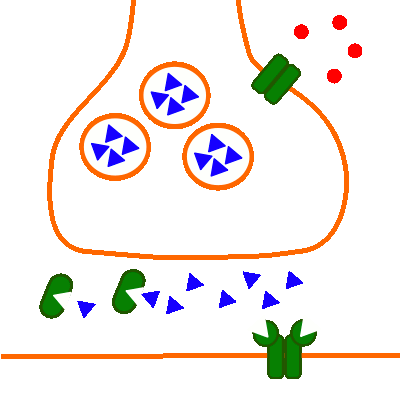
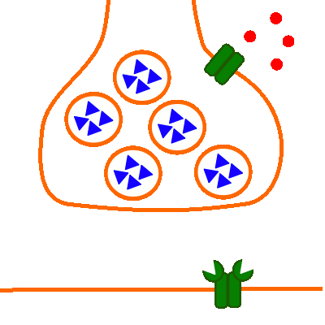

Erregungsübertragung (chemisch): An der neuromuskulären Synapse
Spaltung und Wiederaufnahme des Neurotransmitters

Abb. 1: Nur Spaltung und Wiederaufnahme des Neurotransmitters
- Präsynaptisch (oben):
Präsynaptische Membran des Axons und des daran anschließend des Axonendknotens;
Vesikel-Membran;
Spannungsabhängiger Calciumioneniumkanal (Kanalprotein);
Acetylcholin als Neurotransmitter (in der funktionsfähigen Form dreieckig, löst sich wieder von den transmitterabhängigen Natriumionenkanälen, die sich daraufhin wieder schließen) das funktionslose Spaltprodukt Cholin (ohne Acetyl) ist hier etwas deformiert dargestellt.;
- Postsynaptisch (unten):
Postsynaptische Membran der Muskelzelle (die sich in dem neben der Synapse anschließenden Bereich befindlichen spannungsabhängigen Natriumionenkanäle sind nicht dargestellt);
Transmitterabhängiger Natriumionenkanal (Kanalprotein) mit den nun wieder unbesetzten Rezeptorstellen für den Neurotransmitter Acetylcholin;
- Im Synaptischen Spalt:
Acetylcholinesterase (Enzym, welches den Neurotransmitter Acetylcholin
hydrolysiert in die Spaltprodukte Cholin und Acetationen)
- Der Neurotransmitter löst sich von den Rezeptorstellen ab und liegt im synaptischen Spalt vor.
- Das Enzym Acetylcholinesterase spaltet Acetylcholin in Cholin und Acetationen.
- Die Cholin-Moleküle werden durch Endocytose an der präsynaptischen Membrann wieder vom Axonendknoten aufgenommen.
- In den Vesikeln wird aus Cholin wieder Acetylcholin hergestellt, so dass es dann für einen neuen
Erregungsübertragungszyklus zur Verfügung steht.

Abb. 2: Kompletter Ablauf
- Der spannungsabhängige Calciumionenkanal öffnet sich.
- Calciumionen strömen ein.
- Die Vesikelmembran verschmilzt unter Einfluss der Calciumionen mit der präsynaptischen Membran.
- Der Neurotransmitter Acetylcholin wird in den synaptischen Spalt ausgeschüttet.
- Die Neurotransmitter-Moleküle docken an den Acetylcholin-Rezeptoren des transmitterabhängigen Natriumionenkanals an.
- Die transmitterabhängigen Natriumionenkanäle öffnen sich.
- Natriumionen strömen in die Muskelzelle ein.
- Es kommt zu einer Depolarisierung, zunächst bildet sich ein Amplituden moduliertes Endplattenpotenzial.
- Im Falle einer überschwelligen Depolarisation entsteht ein Frequenz moduliertes Muskel-Aktionspotenzial,
das sich über die postsynaptische Membran der Muskelzelle hinweg wie ein normales Aktionspotenzial ausbreitet.
Die dafür notwendigen spannungsabhängigen Natriumionenkanäle, spannungsabhängigen Kaliumionenkanäle sowie die
Natrium-Kalium-Pumpe sind hier nicht dargestellt.
- Der Neurotransmitter löst sich von den Rezeptorstellen ab und liegt im synaptischen Spalt vor.
- Das Enzym Acetylcholinesterase spaltet Acetylcholin in Cholin und Acetationen.
- Die Cholin-Moleküle werden durch Endocytose an der präsynaptischen Membrann wieder vom Axonendknoten aufgenommen.
- In den Vesikeln wird aus Cholin wieder Acetylcholin hergestellt, so dass es dann für einen neuen
Erregungsübertragungszyklus zur Verfügung steht.
Externe Links
Synapse: Chemische_Synapsen